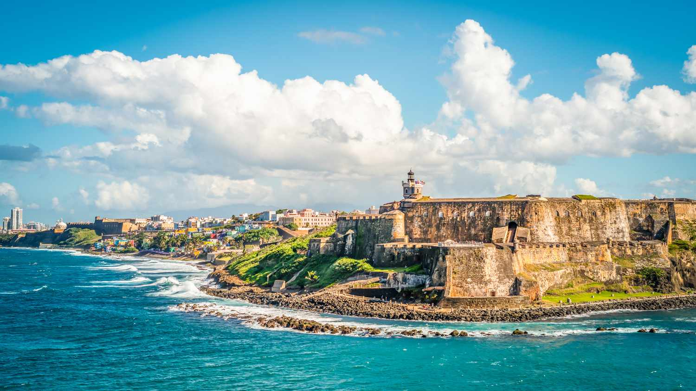

Culture thrives here through music, dance and cuisine. Puerto Rico has a rich mix of traditions, food, and history that reflect its diverse cultural roots. Its traditions are influenced by Spanish, African, and Taíno heritage, seen in music, festivals, and everyday life. The food is known for bold, comforting flavors, with common ingredients like rice, plantains, and pork used in many classic dishes. Puerto Rico’s history is also a big part of its identity, especially in places like El Morro, a historic fortress that shows the island’s colonial past and offers a glimpse into its long and unique story.

El Morro, officially known as Castillo San Felipe del Morro, is one of Puerto Rico’s most famous and historic landmarks. Built by the Spanish in the 1500s, this massive fortress was designed to protect the island from sea attacks and played a key role in its colonial defense. With its thick stone walls, lookout towers, and sweeping views of the Atlantic Ocean, El Morro offers visitors a chance to step back in time while enjoying some of the most scenic views in San Juan. Today, it stands as a powerful symbol of the island’s history and resilience.
 Old San Juan (Viejo San Juan) is the heart and soul of Puerto Rico's capital, San Juan, and a must-see for anyone visiting the island. This historic district, with its cobblestone streets, colorful colonial buildings, and vibrant atmosphere, feels like stepping back in time.
Old San Juan (Viejo San Juan) is the heart and soul of Puerto Rico's capital, San Juan, and a must-see for anyone visiting the island. This historic district, with its cobblestone streets, colorful colonial buildings, and vibrant atmosphere, feels like stepping back in time.
The Food
Puerto Rico’s cuisine is known for its bold and comforting flavors, and three standout dishes are mofongo, arroz con gandules, and sancocho.
- Sancocho is a flavorful, hearty stew made with a mix of meats like pork, beef, or chicken—along with root vegetables such as yuca, potatoes,
and plantains. It's a comforting dish, rich in flavor and perfect for colder weather or when you’re craving something filling.
- Mofongo is one of Puerto Rico's most beloved dishes, made from mashed fried plantains, often mixed with garlic, olive oil, and a variety of meats like
pork, shrimp, or chicken. It’s typically served as a side dish or main course, and its crispy exterior with a soft interior is a perfect combination
of textures.
- Arroz con Gandules is the island's national dish, consisting of rice cooked with pigeon peas, seasoned with sofrito (a flavorful mix of garlic, onions,
peppers, and herbs), and often accompanied by pork. It’s a savory, hearty dish that’s a staple at family gatherings and celebrations.